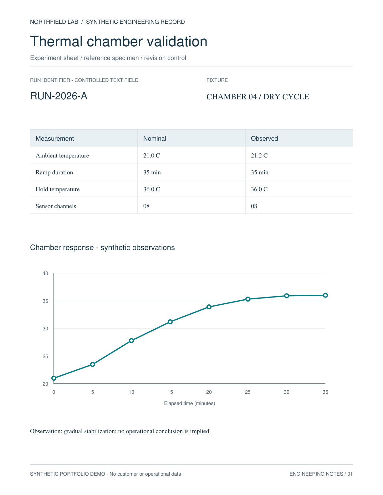
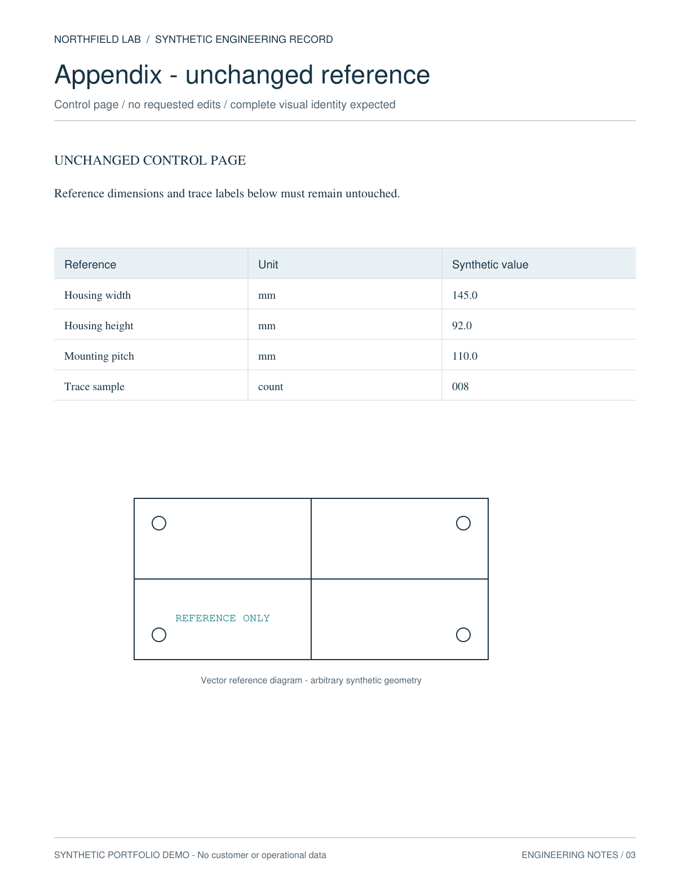

2903 / INDEPENDENT DEMO
Independent PDF Text Replacement Demo
Self-made 3-page records, 2 spans edited, 144 DPI outside-box pixel check
3Page
2Edits
27 / 27Checks · unittest
0Outside 2 pt expanded box · pixels
Before · Page 1
RUN-2026-A
After · Page 1
RUN-2026-BIndependent Demo Verification
| Page | MuPDF Δ pixels | Poppler Δ pixels | Outside box |
|---|---|---|---|
| 1 | 337 | 1124 | 0 |
| 2 | 884 | 1223 | 0 |
| 3 | 0 | 0 | 0 |
144 DPI · RGB · MuPDF 1.26.7 / Poppler 26.07.0
pypdf · source SHA-256 · 27 unittest checks
0 pixel change · Outside 2 pt expanded box
SHA-256 / source
1561c1081e69d44ad1253ffab681f556672fc41f71d74d3b756d7f9e05d33082
1561c1081e69d44ad1253ffab681f556672fc41f71d74d3b756d7f9e05d33082
Control page · Page 3

0 pixel change
Restricted ASCII, white background, built-in fonts, local files only, no Drive.Self-made records · actual PDF renders